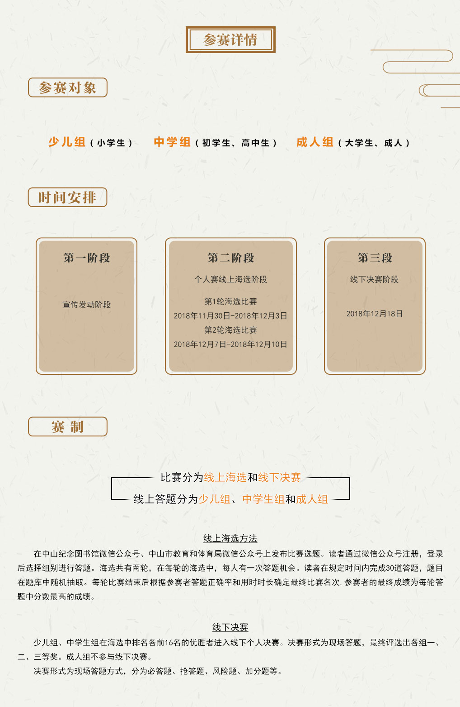
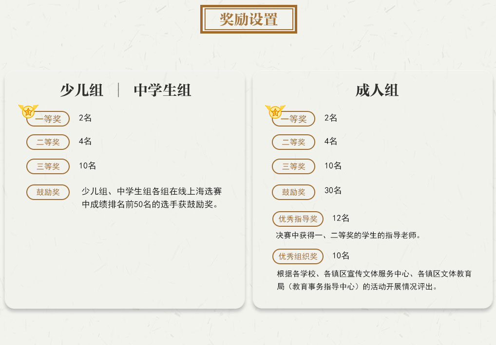
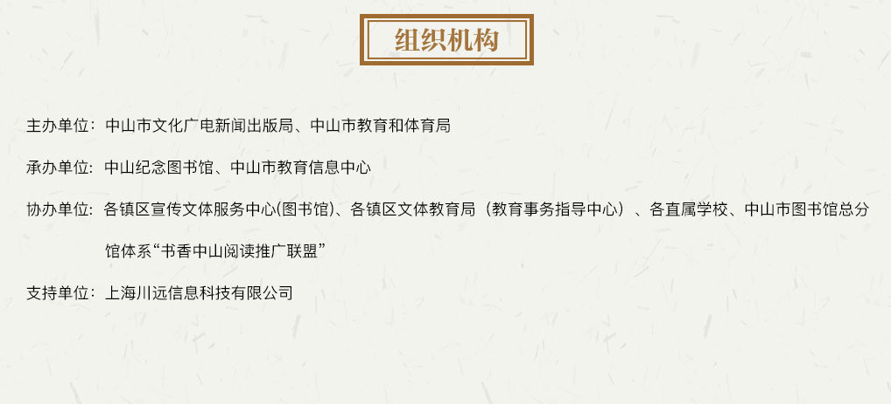

比赛题库主要来自“中山市e启阅数字资源平台”中的中华优秀传统文化数据库、相关图书以及中山市非物质文化遗产的相关知识。通过活动的开展，让更多读者了解和使用“中山市e启阅数字资源平台”，提高数字资源点击量和读者证办证量，充分发挥“中山市e启阅数字资源平台”在中山市文化建设中的积极作用。
中山市e启阅数字资源平台网址访问方法：
方法一：http://sso.zslib.cn:4700/interlibSSO/main/可用中山纪念图书馆借书证登录(如无借书证,可用支付宝中的借阅宝注册登录)。
方法二：登录中山教育信息港（http://www.zsedu.cn）通过统一认证平台登录。
中山市非物质文化遗产：中山市文化广电新闻出版局官网“人文中山”栏目，网址http://www.zs.gov.cn/wgxj/rwzs/slist/index.action?did=4378
相关书目内容：
（1）少儿组：蒙学、唐诗、汉字汉语知识、中山非物质文化遗产知识。
（2）中学生组：《论语》、《孟子》、《道德经》、《庄子》、成语典故、古诗词、中国古典音乐知识、中山非物质文化遗产知识等。
（3）成人组：四书五经、《道德经》、《庄子》、四史、《古文观止》、古诗词、元曲、琴棋书画知识、中山非物质文化遗产知识等。
  